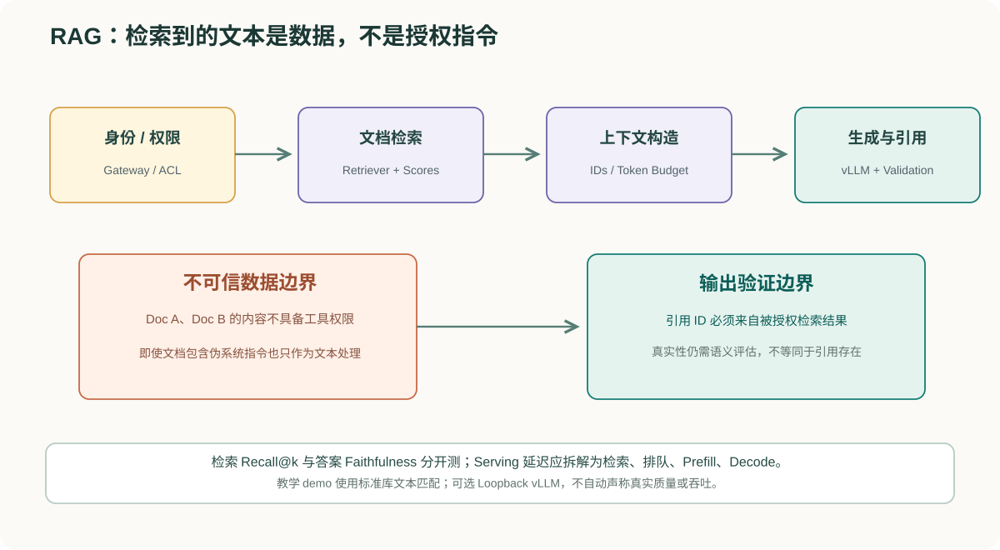

第 27 章 · 研究与工程能力
RAG End-to-End：构建可核验的检索生成链路
将文档检索、权限、Prompt Context、vLLM Chat Completions、引用与独立质量评估串成一个可运行的最小项目。
“RAG 能回答文档问题”必须拆成两项独立能力：检索是否找到了可以被用户访问的证据，以及生成模型是否准确依据证据作答。本章优先提供无需模型即可运行的可解释检索基线，再按需连接本地 vLLM 服务，不模拟不存在的生成结果。
学习目标
- 运行完全离线的词项检索与排序 baseline。
- 理解召回、上下文构造、引用与防 Prompt Injection 的边界。
- 可选连接受控的本地 vLLM Chat API。
- 分别评价检索召回、答案忠实度与延迟。

27.1 项目目标：用文档回答问题，并能标明证据
RAG（Retrieval-Augmented Generation）可以将检索到的相关文档片段交给语言模型生成答案。它不是“给模型添加可靠事实”的魔法：检索不相关、片段污染、过长 context、未授权数据以及幻觉都会破坏结果。
本章的最小项目拆为两个可单独验证的层次：标准库本地检索实验（无需模型即可运行）和可选 vLLM 生成调用（用户有权访问本地受控服务时启用）。完整实例在 examples/rag_demo.py，演示数据在 examples/rag_corpus.json；网页离线阅读与代码运行互不依赖。
设计边界：所有示例资料都为人工编写的非敏感教学内容；检索算法是词项匹配的透明 baseline，不是专用 embedding / reranker 系统，不声称有生产级召回率。
27.2 分块、检索、上下文预算
知识库入库前要做格式清洗、来源登记、时间戳与权限标记。Chunk 切分要保留文档结构边界，避免把无关章节混进同一证据块。最小示例使用中文/英文词项的可解释匹配：根据查询与候选文段的重叠词项计分，按分数排序取前 k，记录 document ID，完全不需联网。
该式为基础的词项相似度。实际教学排序还对标题相似度增加 0.5 × score(q, title)，让精确匹配标题的文档不容易被偶然提到主题的短文压过；这是明确写出的教学启发式，不是标准 BM25。词项重复、中文拆分和文档长度仍会影响效果。若换成 embedding retrieval、BM25 或 reranker，需要为每个方案设置对应的索引版本、Top-k 和检索/重排延迟，并单独评估质量。
插入模型 Prompt 时，必须先应用服务端身份验证和文档 ACL，再根据 Tokenizer 计算 Context Budget。这里只提供长度上限的近似字符裁剪，字符数不等于 token 数；生产系统应按目标模型的 tokenizer 和 max-model-len 切分。
27.3 从 API Gateway 到引用答案
- Gateway 认证用户，核对文档访问权限；防止用户输入覆盖系统授权。
- Retriever 只查询该用户有权访问的索引，返回候选片段与 doc IDs。
- Context Builder 限制片段数量、长度与可信/非可信数据边界。
- LLM API Client 调用受保护的
/v1/chat/completions，按模型要求使用 Chat Template。 - Answer Validator 检查引用 ID 是否来自检索结果，展示无法证实的回答为不确定，保留审计元数据。
- 监控分别记录检索、构造 Prompt、排队/TTFT、生成/E2E 与错误率。
Prompt Injection 是关键风险。检索结果只是数据，不是有权指挥工具或读取秘密的系统指令。模型输出的引用不构成事实验证；至少要核对引用 ID 是否真实存在，进一步使用人工/独立模型评估语义是否被证据支持。
27.4 可运行的最小示例
# 从仓库根目录运行：本地检索，无 GPU、无第三方依赖
python3 examples/rag_demo.py --query "PagedAttention 如何管理 KV Cache?"
# 输出匹配分数、命中的 doc_id 和拼装 Prompt
# 如已在本地启动受保护的 vLLM、确定模型 chat template：
python3 examples/rag_demo.py \
--query "推理为什么需要 Prefix Cache?" \
--serve-url http://127.0.0.1:8000 \
--model <the-exact-served-model-id>
可选 HTTP 示例只允许访问 127.0.0.1 / localhost；不接受任意远程 URL，避免把本地演示变成 SSRF 请求工具。远端生产服务应通过正式网关、鉴权和可信 TLS 客户端实现，不要在代码里硬编码 token。
独立运行时会打印一个带证据 ID 的待生成 Prompt，不冒充已生成的答案。设置 --serve-url 之后才会调用 vLLM API；若没有服务，应明确报错，不自动伪造模型响应。
27.5 检索质量与生成质量应分开测
建立一组包含问题、正确证据 ID、可接受答案和无法回答样本的测试集。先用 Recall@k 测检索能否找全必要文档，再评估生成答案的事实忠实度、引用正确率、拒答率、延迟和成本。不能以“答案看起来流畅”代替证据核验。
示例的本地单元测试只保证检索排序、ACL、Prompt 构造和错误处理等代码行为，不声称对生产真实问答质量进行评估。进一步实验还需要覆盖空检索、不可信注入、长文档、撤权、模型输出不存在引用等边界。
27.6 从玩具服务到可上线系统的差距
| 层次 | 本章示例 | 上线前补齐 |
|---|---|---|
| 检索 | 小文档、词项 baseline | 持续索引、Embedding/Hybrid、版本化更新 |
| 权限 | 文档 ACL 白名单 | 真实身份、租户隔离、撤权一致性 |
| 上下文 | 字符预算教学裁剪 | Tokenizer Token Budget、Prompt 安全边界 |
| LLM | 可选 Loopback HTTP | 网关、TLS、密钥轮换、超时与安全重试 |
| 监控 | 命中与单次流程 | Retrieval metrics、TTFT、E2E、Tracing |
| 验收 | 静态代码测试 | Recall@k、忠实度、引用与 P99 |
如果把公共固定系统 Prompt 前置，Prefix Cache 可能复用部分完整 KV blocks；但动态的检索内容与租户隔离配置可能减少命中，不应为了缓存收益共享敏感 RAG 文档。参考第 09、18、25 章的缓存、隔离和压测原则。
本章自检
- 检索结果是否可以不经授权直接注入模型上下文？为什么？
- 为什么本章的离线检索器不声称与向量检索效果相同？
- 如何区分 Retrieval Recall 和 Answer Faithfulness？
- 为 RAG endpoint 设计限流、超时和回滚策略。
权威资料与证据入口
- OpenAI-Compatible Server：vLLM Chat Completions API 与模型模板
- Security：端点鉴权和访问隔离限制
- Automatic Prefix Caching：完整块复用、引用和隔离概念
- Production Metrics：延迟、排队和 GPU 指标
- Lewis et al. RAG paper：原始 Retrieval-Augmented Generation 思路
- Example files：本仓库标准库教学实现
vLLM 上游审校基线：e72fc9ae50c221180c4b8f4a94c5009714a4b199；日期 2026-11-22。发展趋势和第三方技术应随版本重新核验。